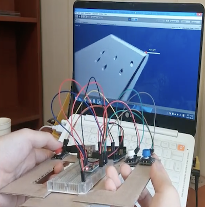

구현 기능

|
공 조종 기능 컨트롤러를 기울여서 공을 조종할 수 있습니다. |
|  |
시점 전환 기능 컨트롤러 내의 버튼을 눌러서 시점을 전환할 수 있습니다. 빨강색 버튼을 누르면 시계 반대 방향으로, 파랑색 버튼을 누르면 시계 방향으로, 하양색 버튼을 누르면 원위치로 돌아옵니다. |

|
박스가 사라지는 기능 공이 박스한테 다가가면 해당 박스는 사라집니다. |

|
승부 판단 기능 제한 시간 안에 박스를 모두 없애면 승리합니다. |
배경과 목적
컴퓨터시스템입문 수업 시간에 Arduino로 작품을 만드는 과제가 있었습니다. 최대한 창의적인 작품을 만들기 위해 제작하게 되었습니다.
컴퓨터시스템입문 수업 시간에 Arduino로 작품을 만드는 과제가 있었습니다. 최대한 창의적인 작품을 만들기 위해 제작하게 되었습니다.
배운 점
- Arduino와 Unity 프로그램을 연동하는 법을 알게 되었습니다.
- 버튼과 기울기 센서를 활용하는 법을 알게 되었습니다.
- Arduino로 하드웨어를 설계하고 구현하는 법을 알게 되었습니다.
진행 절차
- Arduino 프로그래밍을 하기 전에 박스와 테이프를 적절히 활용해서 게임 컨트롤러의 모형을 구현하였습니다.
- 기울기 센서와 큰 버튼 3개를 구입한 후 게임 컨트롤러 모형에 부착하였습니다.
- 아두이노와 Unity를 연동하는 작업을 하였는데, 이것이 가장 어려웠습니다. 그래서 서로 연동하는 예제를 오랜 시간 끝에 구글에서 찾은 후 시리얼 포트를 맞춰서 어떻게든 실행되도록 하였습니다.
- 서로 연동하는 예제를 참고해서 Unity 기반의 기존 공굴리기 게임을 C/C++ 기반의 아두이노 프로그램과 연동되도록 수정하였습니다.
- 이렇게 해서 원하는 프로그램을 구현할 수 있었습니다.
역량 강화를 위해 가장 노력한 점
Arduino로 창의적인 작품 제작 및 Unity하고 연동
Arduino로 창의적인 작품 제작 및 Unity하고 연동
전체 구조

사용 기술
Arduino, Unity
Arduino, Unity
개발 환경
Arduino IDE, Unity
Arduino IDE, Unity